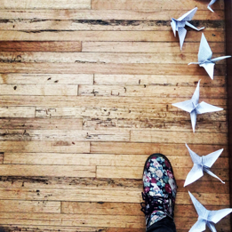

{kind=link}

Tsuru: origami tradicional de la cultura japonesa que
simboliza salud, suerte, felicidad,
longevidad y fortuna.
Este proyecto busca convocar/provocar a la acción de manera poética. El objetivo es multiplicar, involucrar y
generar una red de personas que quieran ser parte activa de este camino, ofreciendo este regalo - ahora
colectivo - a una sociedad enferma. Una invitación a los que vienen después de nosotros, a los que vienen
lado a lado y a los que tal vez tuvieron que recorrer el camino solos, parafraseando a Jorge Larrosa.
La idea es compartir un objetivo a través de una acción y un deseo - un tsuru es un deseo. El deseo de
encontrar a nuestros cuerpos ausentes a través de una acción poética inspirada por nuestros cuerpos
presentes y dispuestos a accionar. Mantener a los tsurus vivos, para que puedan encontrar su libertad.
Compartir el estar y celebrar el poder estar. ¿Cómo el arte puede resonar en el campo social?
¿Cómo las redes sociales pueden ayudarnos a encontrarnos entre personas? ¿Es posible cruzar las barreras
entre el arte y lo real? ¿Dónde está el límite y hasta dónde estamos dispuestos a llegar? Tal vez este sea
un intento de desarrollar un espacio continuo de crecimiento de una esperanza metafórica e inter-subjetiva.
{kind=link}
{kind=link}
{kind=link}